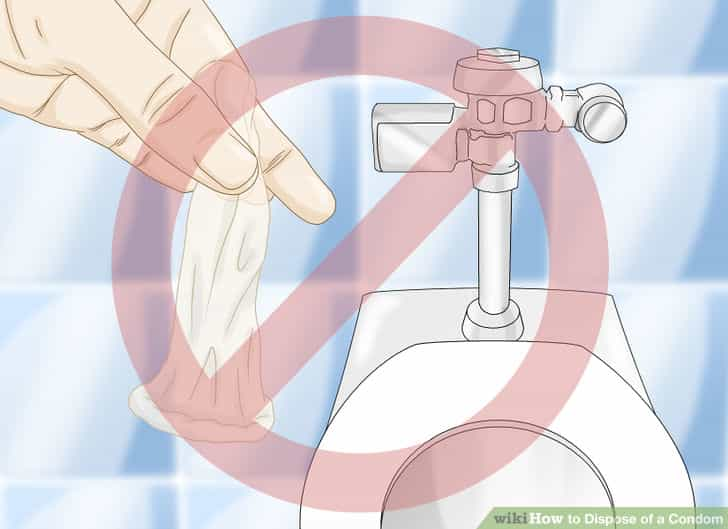

< < < Back
5 Tips To Avoid A False Rape Accusation On Campus – Return Of Kings
After sharing my story on how I was falsely accused of rape on campus, I received an interesting email from a follower. He liked the article, and recommended that I share some advice on how college men nowadays can avoid false rape accusations.
If you do not think that you need to know these things, you are wrong. I didn’t think that I would be falsely accused of rape, but I was—and dozens of men are falsely accused every day.
College campuses, however, are particular hot spots for false rape accusations. Why? Well, it’s due to a number of factors. There’s always alcohol involved, the parties are typically close-knit groups (so everyone knows one another), and girls are particularly immature and gossipy.
These three things create a recipe for disaster when it comes to false rape accusations. And since the campus police sure as hell aren’t on your side, you need to protect yourself. But by just following a few simple tips, you can easily save yourself years in prison or thousands in lawyer fees.
1. Send A Day After Message

Or else this will happen
Text evidence is hard to dispute. I honestly wish I’d had known this with the girl who falsely accused me of rape, because I would’ve saved a good amount of cash on lawyer fees. I also could’ve pushed to expel her.
Regardless, I can’t change the past—but you, the men of ROK, can arm yourselves with knowledge to save yourselves. One of these pieces of knowledge is to ALWAYS send a message to the girl you fucked the day after you fuck her.
Make sure it’s something sexual, and get her to reply. Say something like “I hope you enjoyed last night ;)” or “You were amazing last night, I hope we meet again sometime.” Even though they’re kind of chode-y, they can easily save you a huge amount of heartache. If this girl decides to falsely accuse you of rape, so that she doesn’t feel like a slut, you can whip out your phone and make the investigator look like a complete idiot.
Be sure to take pictures of these messages too, or at least don’t delete them…which brings me to my second point.
2. Delete NOTHING
Nowadays, there’s an avalanche of evidence to be found in our phones. Snapchat, Facebook, SMS, text messages, Tinder, and the list goes on and on. If she won’t stop flirting with you via Facebook, take a screenshot and save the images. If she sexts you on Tinder, screenshot and save the images. And if she sends you nudes on Snapchat? Screenshot the shit out of them.
I learned this one the hard way. There was a girl that I met in my Sophomore year of college; I was a total newbie to game, but I had a few moments of glory. I saw this hot girl in my math class, and proceeded to isolate her, act like a bad boy, and kino her legs. It was pretty ballsy, but FUCK did it work.
She was snapping me nudes and sexual pictures for literally the next year. Me, being a scared shitless newbie, never pulled the trigger until my junior year. I guess she thought I was an “aloof bad boy” the whole time, but I digress. She invited me over to a party, and long story short, we were both alone in her bed.
She had literally pulled me to her bedroom, and kept going on about how she was completely plastered after like two shots. She dropped thousands of hints that she wanted me to rape her.
“I thought you would take advantage of me…” “You’re really cute…” “I’m so drunk right now, you could do anything to me…”
In fact, she literally asked me: “Do you want to have sex?” and wouldn’t stop making out with me. But I could sense the bitch was trouble.
Already having been falsely accused of rape, I realized the severity of what I’d gotten myself into. I kept trying to escalate with her, but she kept pushing me away and saying she was “confused.” But then no more than 30 seconds later, she’d be grabbing my dick. She literally wanted me to pin her down and fuck her.
If I had in fact decided to fuck her, even though it would have been completely consensual, if at ANY point someone found out or walked in on us, she would’ve yelled “HELP, HE’S RAPING ME,” and I would’ve been fucked.
So I got the hell out of there questioning why I’d never saved her Snapchat nudes. “WHY?” I thought. Had she ever falsely accused me of raping her, because she felt bad that I didn’t rape her (oh the irony), I would’ve had ample evidence that she was soliciting sex.
The lesson here is save every single naughty sext, picture, or message that you get from a girl.
3. Buy A Hidden Camera
As Roosh wrote about here, recording sex with a hidden camera is a very smart move for men nowadays. It’s so sad that we even have to do things like this, but that’s what happens when hyper-feminism runs amok.
I’m probably going to buy a hidden camera within the next few weeks for my room, because I’ve had way too many close encounters with women accusing me of rape, or at least spreading rumors that I raped them.
We at ROK cannot advise you to break the law, but if you do end up going this route, it is in your best interests to tell NOBODY about this camera. And after every single sexual encounter, be sure to put the video file onto an encrypted USB drive. This is not to jack off to, or to upload to pornhub, it’s to cover your own ass.
Depending on your state, there may be laws against this. But it’s far better to have yourself legally protected against a false rape accusation than it is to be completely vulnerable to the whims of any woman who changes her mind. Roosh recommended this camera here, so if you’re either going to college, or your son is going to college, I would highly recommend buying one and giving it to your son or keeping it for yourself.
4. Don’t Say Shit

Just say this
As somebody who was a pre-law philosophy major, I can tell you that literally 99% of people have no clue just how easily words can be manipulated with just a small knowledge of semantics.
Take, for example, a simple question: “So, roughly what time did you have sex with Miss Jessica?” Although it may seem completely innocuous, it’s a complete death trap.
“Umm I think it was around 1AM?”
“Where’d she come from?”
“Uh some frat house down on-”
“So there was alcohol involved?”
“Well, yeah, but-”
“Did you know she was drunk?”
“Well I assumed she’d had a few—but wait that doesn’t mean she’s dru-”
“So you admit to taking a girl from a frat house, who was drunk, with the intention of having sex with her. That sounds a lot like rape, Mr. Smith.”
“No! She wanted me to have sex with her!”
“So you did in fact penetrate her?”
“Yes, but it was completely consensual, she even gave me head!”
“So you think that her giving you oral sex is consent for you to penetrate her vaginally? I don’t think you understand what consent is, Mr. Smith. We’ll investigate this matter further and your trial will be held on June 3rd, 2016.”
“What, but NO she-”
DUDE. SHUT THE FUCK UP.
You men need to realize that literally anything you say will be used against you. If you are EVER falsely accused of rape, simply arrive at the office, ask them what you are being accused of, and get as many details as you can.
If they ask you questions, tell them that you will return with a lawyer. Yes, lawyers cost a lot of money, but it’s a lot better than going to jail. Pay for a lawyer and don’t say shit. Just this tip alone saved me from potentially going to jail.
5. Flush Your Condom Down the Toilet

This image was made by cucks
As Max Roscoe recently wrote about in his article here, there are plenty of women who are crazy enough to shove your used condom up their vaginas and impregnate themselves when you’re in the bathroom or something.
And do you know what she’ll do when she’s pregnant with your seed, to avoid social pressure? She’s going to falsely accuse you of rape.
“He raped me! But…I just can’t bring myself to get an abortion, I wouldn’t be able to live with myself.” Yeah, right. You just want an alpha male’s seed and the social support that comes with claiming you were raped.
You will be especially vulnerable to your seed being stolen if you have good game. Not all women, but a few crazy bitches might want to “tie you down,” since they perceive you as being such an alpha male. It’s a woman’s natural instinct to try to tame alpha males, so be careful with your seed.
Nearly every player I’ve talked to flushes his condoms down the toilet, and for good reason. All it takes is one crazy girl to completely and utterly destroy your life. Don’t get stuck paying $5,000 in child support every month for the next 18 years. Flush your condoms down the toilet.
Bonus: Avoid Sex And Work On Yourself

This could be you at age 25
Unfortunately, college is not the “anything goes,” sex haven that it was in the 1960’s. Nowadays, it may not even be worth it to have sex in college, due to the extremely high rate of false rape accusations.
So, consider working on yourself instead. Rather than trying to pull girls, spend some time hiking with buddies in nature. Or have a “man’s movie night,” where you share some beers with your mates and watch a badass movie like Gladiator or something.
Work out, supplement and eat right, read good books, invest in yourself, meditate, and get your financial future solid. Yes, it will be a tough four years without getting pussy, but that’s a choice you’ll have to make.
Either way, there’s benefits. If you can successfully avoid a college rape accusation, then the amount of young, fresh pussy you’ll slay will be worth it. But, if you’re not willing to take the risk, you can set yourself up for later sexual success. It’s up to you.
 If you like this article and are concerned about the future of the Western world, check out Roosh's book Free Speech Isn't Free. It gives an inside look to how the globalist establishment is attempting to marginalize masculine men with a leftist agenda that promotes censorship, feminism, and sterility. It also shares key knowledge and tools that you can use to defend yourself against social justice attacks. Click here to learn more about the book. Your support will help maintain our operation.
If you like this article and are concerned about the future of the Western world, check out Roosh's book Free Speech Isn't Free. It gives an inside look to how the globalist establishment is attempting to marginalize masculine men with a leftist agenda that promotes censorship, feminism, and sterility. It also shares key knowledge and tools that you can use to defend yourself against social justice attacks. Click here to learn more about the book. Your support will help maintain our operation.
Read More: 3 Signs She’s Making A False Rape Accusation